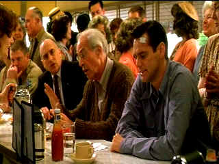
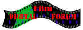

| Majestic, The (SE)/ C+, A |
| Warner/2001/112/ANA 1.85 |
It's 1951. Hollywood is in the throes of a
Communist witch hunt. As the vacuum cleaner of suspicion touches an
ever-widening carpet of writers and directors and actors, even minor
figures like B writer Pete are fingered for examination. Careers are
broken and the intellectual artistic community is in a state of despair.
Pete's not the kind of guy to stand up to the tyranny. But his life is
about to be flipped like a pancake that does know whether it wants to be
blueberry of buttermilk. Suddenly finding himself washed ashore in Lawson,
a small California coastal town, Pete must examine his life as the
realizations of truth are slowly exposed.
 |
|
Surrounded by the folks of
©
|
Director Frank Darabont has some terrific raw
material to work with in The Majestic. Michael Sloane's screenplay
might even have seemed more logical and less full of holes on paper. You
can imagine a compelling film evolving from the basic ingredients. But in
the end, The Majestic is a rather plastic film. The look is
plastic, the sentiments are plastic. Even though you do want to like The
Majestic, the artificial nature of the delivery presents an
insurmountable barrier. At its most poignant, there's an underlying sense
of plastic as in the scenes during the testimony at the blacklist
hearings. The Majestic does pull successfully at your heart strings
in this section. The speeches are righteous, the acting is fine, but all
that leads up to Pete's towering moment of self revelation is so false
that you feels suckered by the emotional pull. There are devices in
the film that do not seem wholly truthful. Pete's identical appearance to
Luke, even given the indications that the resemblance is stretched by
people's desire to see what they want, is difficult to accept. The romance
between Pete and Adele is far from convincing, even given their supposed
history.
Darabont willingly spreads on the blatantly
emotional jam with relish. There's been lots of comparisons between
Darabont's work on The Majestic and the work of Frank Capra. But
Capra's work, sentimental and simplistic as it often was, had an honest
core. It was made before synthetics had taken over so much of our society.
As hard as Darabont tries to capture the innocence, he fails. There's far
too much syrup in his soda mix and the artificial you should be forewarned
that artificial flavoring is pervasive. Strange as it may seem, I was more
reminded of the wacky satirical tone of Preston Sturges than of Capra.
Jim Carrey is good enough as Pete, the hungry
Hollywood writer ready to compromise art and conscience with little
compunction. But Pete's turnabout doesn't get sufficient justification
from the script. It's a tough nut for Carrey to crack, though again, he is
especially effective in the hearing scenes. I found Martin Landau
bordering on offensive as Harry Trimble, the owner of The Majestic
theater and a father in desperate emotional search for his son lost in
World War II. James Whitmore is a welcome voice of small town nostalgia as
Stan Keller, the man who finds Pete on the beach. Laurie Holden manages to
hiccup her way through the part of Adele with good nature.
The Majestic is dressed in gorgeous DVD
clothing. Blacks are incredibly glossy infusing every color with
astounding depth. Overall color saturation is exquisite. Color resolution
produces an a beautiful array of colors from brightly saturated flowers to
the warm tones of the interior of the movie theater. The images are
wonderfully sharp. Check out the wonderful shadow detail in that first bar
room scene. It's in perfect balance. The lighting tone is captured to
perfection. Night scenes glitter. Every lighting situation is breathtaking
beautiful. Mark Isham's sentimental score is delivered with open purity on
the Dolby Digital 5:1 surround track.
Warner has packaged The Majestic as a
special edition, but the lack of an audio commentary is conspicuously
absent. The seven deleted scenes fill in some minor blanks. The complete
almost five minute sequence of the movie within the movie Sand Pirates
of the Sahara is fun. A short essay on the Hollywood Blacklist era
adds necessary background for the uninformed. |
|
|
|

Selections from the Feature
Archive include articles on Akira Kurosawa, Frank Darabont, Blonde Bimbos, Hollywood Street Gangs, or Vietnam: The Hollywood Pariah, and many
more....
Sturges Emerges

Preston Sturges was Hollywood's resident comic genius for more
than a decade. His movies are timeless. Click on his image to read all
about it.
 
ISF Monitor
Calibrations in the Tristate New York area. Lots of hardware
info and frequent hardware peaks from video expert Kevin Miller. They may
be judgmental, but that's the point, isn't it. Lots of DVD reviews plus
news and more.

The National Film Preservation Foundation (NFPF) is the
nonprofit organization created by the U.S. Congress to save America's film
heritage.

DVD Demystified makes it all clear. The official Internet DVD
FAQ for the rec.video.dvd Usenet newsgroups.

A home theater site filled with a host of useful information, including
links to many other site.

ISF Course Instructors Jim Burns and Kevin Miller are hosting the Digital Film Forum. Join
professionals and enthusiasts for lively home theater discussion.

Truman Show/A,A-
Powered by the consummate taste and directing perfection of Peter Weir.
Jim Carrey gives a marvelous performance. Not to be missed!
|